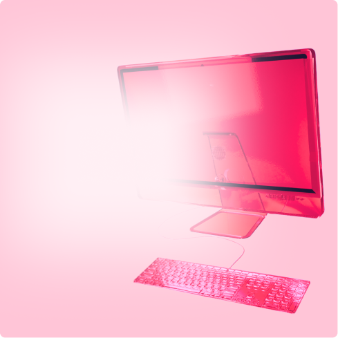
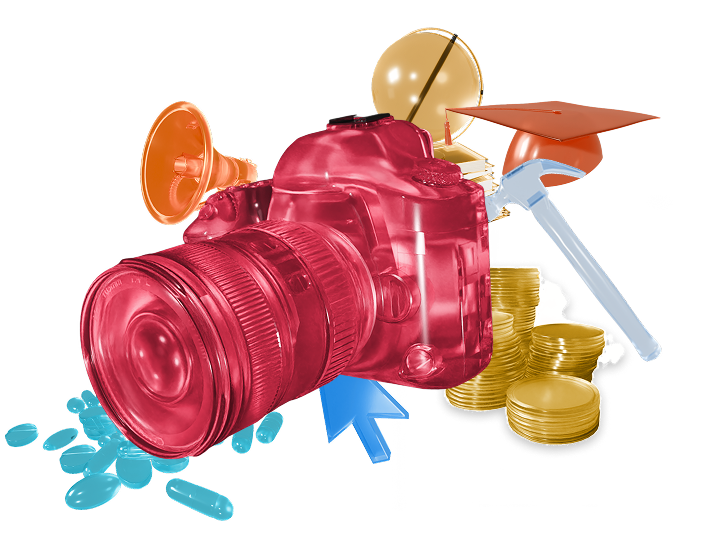

Три шага
к твоей специальности
→ прочитай статью об интересующей тебя сфере
→ пройди тест, чтобы определить навыки
→ ознакомься с мнением экспертов


Интервью с экспертами
Поговорили с представителями разных профессий о том, как меняется их работа, какие навыки становятся важнее и что ждёт специалистов в ближайшем будущем.
- глубокие интервью с экспертами
- реальные карьерные истории
- влияние технологий на профессии
- прогнозы и мнение специалистов о будущем

Статьи о профессиях
Front-end разработчик Создаёт видимую часть сайтов и приложений: всё с чем взаимодействует пользователь (кнопки, меню, анимации, формы).

SSM Специалист по маркетингу, который отвечает за продвижение компании в соцсетях. Выстраивает стратегию, создаёт контент.

Ещё...